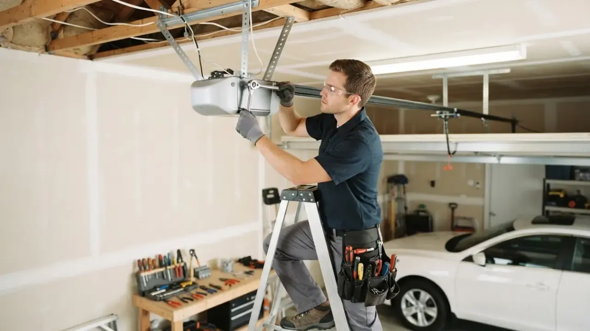

LiftMaster, Chamberlain and Genie openers installed by our Tampa techs
Garage Door Opener Installation in Tampa Done Right the First Time
Bolting a new opener onto a binding door only buys an early failure, so installation here begins with the door itself. Balance, spring tension, and track alignment are checked before any motor is hung, and the horsepower and rail length are matched to the door's real weight, whether it is a 1950s wood door in South Tampa or a modern steel setup in New Tampa. Same-day slots are usually available.
Live dispatcherUpfront optionsBacked workmanship
The basics
What Is Garage Door Opener Installation?
Garage door opener installation is the fitting of a new motor unit, rail, and safety system on a door that is ready to carry it. The opener is the last part of the job, not the first: the door has to balance by hand, the springs have to hold their tension, and the tracks have to run true, or the new motor will strain from day one. Installation covers removing the old unit, mounting the new rail and motor, wiring the safety sensors, and programming the remotes and keypad.
What's included
What's Included in a Standard Opener Install
A new opener installation has to start with the door, not the box the motor came in. Here is what is included in a standard install.
Old Opener Removal
We disconnect power, pull the old motor, rail and brackets, and remove the wall control wiring. The old unit leaves with us, so nothing is left hanging in the garage.
New Opener Mounting
We assemble the rail, mount the header bracket to solid framing, and hang the motor with proper vibration isolation. A bracket fixed to weak framing is what makes a new opener rattle within months.
Safety Sensor Setup
Photo eye sensors get mounted at the correct height and aligned with a sensor alignment tool. Sensors mounted 6 inches off the floor and squared up are what make the safety reverse work every cycle.
Remote and Keypad Programming
We program your remotes, pair any car visor buttons you want, and set the wall mount keypad code. If you have a smart opener, we connect it to your Wi-Fi and the app before we leave.
Full Safety Test
We run the door through multiple cycles, test the auto-reverse with a 2x4 block, and check the force settings. The door has to stop correctly at the floor and reverse on contact before we call the job done.
Service overview
What Garage Door Opener Installation in Tampa Involves
Most Tampa homeowners call us when the old opener is grinding, the remote only works from six feet away, or the door reverses halfway down. Humidity along the Bayshore and in Davis Islands rusts chains and corrodes circuit boards faster than in drier climates, so a unit that lasted 15 years up north may quit at 8 or 9 here.
A standard 7-foot door takes two to four hours. A high-lift or 8-foot door takes longer because the rail has to be cut and the header bracket repositioned. Belt-drive and DC motor units from LiftMaster and Chamberlain cut noise dramatically compared to old chain drives, which matters when a bedroom sits over the garage.

How we workWe verify the cause, compare realistic options, and confirm the repair before we leave.
The service timeline
Our Installation Process, Step by Step
An opener install follows the door, not the other way round. These five steps keep it that way.
Phone Diagnosis
We ask what the door is doing, what brand opener you have now, and whether the door is a single or double. The answers tell us what horsepower and rail length the job needs.
Door and Spring Check
Before touching the opener, we disconnect it and lift the door by hand. A door that will not hold halfway, or drops on its own, needs spring work before any motor goes on.
Old Unit Removal
We kill the power at the breaker, pull the old motor, rail and hanging brackets, and disconnect the wall control wiring. This usually takes 30 to 45 minutes on a standard install.
New Opener Install
We assemble the rail, mount the header bracket to the framing, hang the motor, and set the chain or belt tension. Then the sensors go on and the remotes and keypad are programmed.
Safety Test and Walkthrough
We run the door through three full cycles, test the auto-reverse with a block, check the force settings, and confirm the sensors trip correctly. Then we walk you through the remotes and the manual release.
Timing questions
How long does garage door opener installation take in Tampa?
Plan on two to four hours for a standard 7-foot door. High-lift doors, 8-foot doors, and jobs where we also replace springs or rollers can run five to six hours. We don't rush the safety test, because that's the part that keeps kids and pets safe. You'll have a working door the same day.
Tools & methods
Tools and Methods We Use
Opener installation is half carpentry and half electrical work. These are the tools that cover both sides of it.
Garage door torsion spring winding bars
Winding bars are used to safely adjust or replace torsion springs when the door needs rebalancing before the opener goes on. A new motor on an unbalanced door is a motor that will burn out early.
Garage door torque wrench
A torque wrench is how we torque mounting bolts and header brackets to spec so the opener does not vibrate loose over months of daily use. Loose brackets are the usual cause of a new opener rattling.
Garage door opener remote tester
A remote tester confirms your remotes are transmitting on the right frequency and that the receiver is picking up the signal at full range. A remote that only works from six feet away is a signal problem, not a motor problem.
Garage door sensor alignment tool
A sensor alignment tool gets photo eye sensors lined up precisely so the door does not false-trip on a cloudy day or after a bump. Sensors aligned by eye are the ones that reverse the door for no reason.
Garage door roller removal tool
A roller removal tool lets us swap worn nylon or steel rollers quickly without bending the track or damaging the hinge. Worn rollers are often why the old opener sounded so loud.
Garage door cable drums
Cable drums are replaced when cables are swapped, so the door lifts evenly and the opener is not fighting a crooked load. A crooked door will wear out a new opener fast.
Garage door winding cones
Winding cones are used with winding bars to set and lock spring tension safely during spring replacement or adjustment. They hold the spring assembly in place while the tension is set.
Use cases
When Tampa Homeowners Call Us
Opener installs usually follow a failure, not a whim. These are two jobs where the new unit fixed more than the noise.

Stuck Door and Dead Opener in Seminole Heights
A 1950s wood door in Seminole Heights had a snapped cable and a broken torsion spring, and the opener had given up on it. → How we handle it: We replace both torsion springs, install new galvanized steel cables and cable drums, then install a 1-1/4 HP opener sized for the heavier door.
Smart Upgrade for a Rental Property in Channelside
A rental property in Channelside needed keyless entry for tenants without handing out remotes. → How we handle it: We install a Wi-Fi opener with MyQ and set up temporary access codes for each tenant.
Booking questions
Who installs garage door openers in Tampa?
We do, and we're a garage door contractor (licence number available on request) based here in Hillsborough County. That matters because opener installation involves 120-volt wiring, spring tension and structural brackets, not just bolting up a motor. We handle the electrical connection, the door balance, and the UL 325 safety test in one visit.
Problems we solve
Problems We Solve With a New Opener
Opener trouble usually starts with the door, not the motor. Here are the problems a new opener solves most in Tampa.
Opener runs but the door doesn't move
An opener that runs while the door does not move is usually a stripped gear or a door that is binding. We test the door by hand first, so the new opener is not bolted to the same fault.
Door reverses before it hits the floor
A door that reverses before it hits the floor usually has sensors out of line or force settings set wrong. A new install sets the limits, aligns the sensors, and tests the reverse with a 2x4 block.
Remote only works from a few feet away
A remote that only works from a few feet away usually has a weak transmitter or a receiver fault. We test the signal at full range and program fresh remotes before we leave.
Door is stuck halfway open
A door stuck halfway open usually has a spring or cable problem behind it. We fix the door first, then hang the opener, so the new unit lifts a door that is ready for it.
About this service
Can I keep my old remotes with a new garage door opener in Tampa?
Sometimes. If the old remotes use the same frequency and security system as the new opener, they can be reprogrammed to work with it. Many older remotes are not compatible with newer openers, in which case new remotes come with the unit. The technician tests your old remotes during the install and tells you on the spot whether they will work.
Do new garage door openers work during a power outage in Tampa?
Most standard openers do not, since they run on mains power. Some models have a battery backup that lets you open and close the door a few times during an outage, which is useful during Tampa storms. If power cuts matter to you, ask about a battery backup model before the install, and the technician can explain the options that fit your opener.
Can a new opener be fitted to my existing garage door?
Yes, in most cases, as long as the door itself is in good shape. The technician checks the balance first: a door that is out of balance, or that has a broken spring, must be fixed before a new opener is fitted, because a new opener will not fix a bad door and will wear out quickly trying. The opener is then sized to the door weight and the headroom, and the travel limits and force settings are set for that door.
What is the quietest garage door opener for a home with a bedroom above the garage?
A belt-drive opener is the quietest standard option, because a rubber belt replaces the chain, and it is the usual recommendation when a bedroom sits over the garage. A jackshaft opener is quieter still, because it mounts on the wall and has no ceiling rail, but it costs more. The technician can show you the difference and confirm which fits your headroom and door weight.
Choosing and deciding
What is the best garage door opener in Tampa?
For most Tampa homes, a 3/4 HP belt-drive LiftMaster or Chamberlain with Wi-Fi and battery backup is the sweet spot. Belt drives handle our humidity and heat better than chain drives, and the battery backup keeps the door working through storm-season outages. If you have a heavy wood door, step up to a 1-1/4 HP unit. We'll match the opener to your actual door weight.
What size garage door opener do I need in Tampa?
It depends on the weight and size of your door. A standard single door usually works with a half-horsepower opener, while a heavy double door, an insulated door, or a wood door often needs a three-quarter horsepower unit. The technician weighs the door and checks its size before recommending an opener, so you get a motor that lifts the door without straining. A stronger opener than needed is not a problem, but a weak one wears out early.
Do I need a new garage door opener if I get a new door?
Not always. If the existing opener is under ten years old, runs quietly, and has working safety sensors, it can usually be kept and adjusted to the new door. But if it is older, noisy, or lacks modern safety features, replacing it with the door is better value, because the technician is already there and the two are set up together. Both options are priced so you can decide.
Pricing process
What Opener Installation Costs in Tampa
$350 - $850 depending on opener and door
Opener type and brand
Chain drives cost less but are louder. LiftMaster, Chamberlain and Genie units vary in price based on features like Wi-Fi, battery backup and camera integration.
Door size and weight
A single 7-foot door needs less horsepower than a double 8-foot door. Heavier doors need a stronger motor, and the price follows the weight it has to lift.
Rail length and ceiling height
A standard 7-foot door runs on a standard rail. High-lift or 8-foot doors need a longer rail and a moved header bracket, and that extra work adds labor.
Cost factors at a glance
| Cost factor | What affects the price |
|---|---|
| Typical range on this page | $350 - $850 depending on opener and door |
| Opener type and brand | Chain drives cost less but are louder. |
| Door size and weight | A single 7-foot door needs less horsepower than a double 8-foot door. |
| Rail length and ceiling height | A standard 7-foot door runs on a standard rail. |
Ranges are the ones stated on this page; you get a written estimate before work starts.
Cost questions
How much does garage door opener installation cost in Tampa?
Most installs run $350 to $850 in 2026, including the opener and labor. A basic 1/2 HP chain drive on a single door sits at the low end. A 3/4 HP belt drive with Wi-Fi and battery backup on a double door lands near the top. If your springs or cables need work first, that adds to the total, and we'll tell you before we start.
Customer reviews
What Tampa Customers Say
★★★★★
“My old chain drive finally died after 14 years. They came out the same afternoon, checked my springs, and installed a belt drive LiftMaster. The difference in noise is night and day. They also swapped two worn rollers and didn't charge extra for the trip. Clean work, fair price, and they explained the app setup without rushing.”
★★★★★
“Our door kept reversing halfway down and the remote barely worked. Turned out the sensors were misaligned and the opener was on its last legs. They installed a new Chamberlain with Wi-Fi and battery backup. Now I can check the door from work during storms. Took about three hours start to finish.”
★★★★★
“We have a heavy double door and the builder-grade opener was struggling. They recommended a 1-1/4 HP unit and replaced the torsion springs while they were at it. The door moves smoother than it ever has. They tested the safety reverse with a block in front of me, which I appreciated. Would call them again.”
Book with confidence
What to Look for Before You Book
An opener is the most technical part of the door, so the installer matters as much as the brand. Check these before you book.
- Before any work starts, ask for the licence number and confirm it matches the company name on the quote.
- Ask whether the door will be balanced and checked before the new opener goes on, or whether the motor is fitted to the door as it stands.
- Insist on a written price covering the opener, rail, labour, and programming, and ask how spring work found mid-job gets priced.
- Ask how long the opener and the labour are covered, and get that warranty in writing rather than as a promise.
- Check that the visit ends with a safety reverse test, sensor check, and a walkthrough of the remotes and keypad.
- When the technician arrives, confirm the vehicle is marked and they can say which company sent them.
Choosing
Belt, Chain, Screw, or Jackshaft: Which Drive Fits Your Garage
The drive type is the first choice in a new opener, and it depends on the garage. Chain-drive openers are the strongest and the cheapest, and they suit heavy doors, but they are the loudest, which matters if a bedroom sits over the garage. Belt-drive openers cost more, but they are far quieter, because a rubber belt replaces the chain, and they are the usual recommendation for attached garages in Tampa homes. Screw-drive openers have fewer moving parts and lift quickly, but they need regular lubrication and can struggle in a dusty garage.
Jackshaft openers are the fourth option, and they suit a specific situation: a garage with low headroom, or a garage where the ceiling space is needed for storage. A jackshaft mounts on the wall beside the door and drives the torsion bar directly, so there is no rail across the ceiling at all. It costs more than a standard opener, but for a low-ceiling garage it is often the only option that fits. The technician will measure the headroom and the door weight before recommending a drive, because the right opener is the one that fits your garage, not the one that fits every garage.
- Chain drive: strongest and cheapest, but loudest, and best for detached garages or heavy doors.
- Belt drive: quiet, and the usual choice for an attached garage with a bedroom above it.
- Screw drive: few moving parts and fast, but needs lubrication and can struggle with dust.
- Jackshaft: wall-mounted, no ceiling rail, and the answer for low-headroom garages.
- Door weight: the opener must be rated for the door weight, and the technician checks this first.
Power
Horsepower and Lifting Power: What Your Door Actually Needs
Opener horsepower is often misunderstood. A standard single door needs a 1/2 horsepower opener, and a standard double door needs 3/4 horsepower. More power is not better: an opener that is too strong for the door can mask a spring problem, because it will force a door up that the springs should be carrying, and it will wear out the door and the opener faster. The springs carry the weight, and the opener only guides the door, so the right opener is the one matched to the door, not the most powerful one on the shelf.
What matters more than raw power is the drive and the features. A belt drive on a 1/2 horsepower motor will be quieter and smoother than a chain drive on a 3/4 horsepower motor, and it will last longer because it is not fighting the door. Battery backup is worth considering in Tampa, because a power outage during a storm should not leave the car trapped in the garage. The technician will size the opener to the door and explain the options, rather than selling the biggest motor.
- Single door: a 1/2 horsepower opener is usually enough.
- Double door: a 3/4 horsepower opener is the usual match.
- More is not better: an overpowered opener can mask a spring problem and wear the door out.
- Springs carry the weight: the opener only guides the door, so matching matters more than power.
- Battery backup: worth considering in Tampa, so a storm outage does not trap the car.
On the day
What Opener Installation Day Looks Like
Opener installation is usually a half-day job, and it starts with the old opener coming down, if there is one. The rail, the motor unit, and the wiring are removed, and the new rail is fitted and leveled. The motor unit is mounted to the ceiling with proper bracing, because an opener that is bolted to drywall alone will pull loose. The rail is connected to the door, the safety sensors are fitted at the correct height on either side of the opening, and the wall control is mounted.
Then comes the setup, which is the part that decides whether the opener lasts. The travel limits are set, so the door opens fully and closes fully without straining. The force settings are set, so the door reverses on contact. The safety sensors are aligned and tested, the auto-reverse is tested with a 2x4, and the remotes and keypad are programmed. The technician runs the door through several full cycles, shows you how the manual release works, and explains the maintenance the opener needs. Only then is the job finished.
- Old opener out: the rail, motor, and wiring are removed first.
- New rail and motor: the rail is leveled and the motor is braced to solid framing, not drywall alone.
- Sensors and control: safety sensors fitted at the correct height, and the wall control mounted.
- Limits and force: travel limits and force settings are set so the door opens fully and reverses on contact.
- Test and handover: sensors, auto-reverse, remotes, and keypad tested, and the manual release shown to you.
Related services
Related Garage Door Services

Garage Door Repair
General repair covers the whole system, not just the opener. If the door is off track, noisy, or binding as well, this is the service that fixes it all in one visit.
Garage Door Spring Repair
When a torsion spring snaps, the door turns into dead weight and the opener strains against it. We fit matched pairs, wind them with proper bars, and balance the door so it holds level.
Garage Door Opener Repair
After a storm-season surge, openers often hum, trip the breaker, or drop their remote pairing. We repair LiftMaster, Chamberlain, Genie and Craftsman units and check the safety reverse before we leave.Ready when you are
Get Your Garage Door Opener Installation in Tampa Scheduled
If your opener grinds, reverses for no reason, or has simply given up, call now for an installation quote. We will check the door first, match the right unit to its weight, and get a technician out the same day.

Talk with the local team
Request Garage Door Opener Installation
Call, text or email and a real person answers, day or night. Tell us what the door is doing and we will give you a price range on the spot plus the soonest arrival window. Most calls placed before mid-afternoon get a same-day visit anywhere in Hillsborough County.